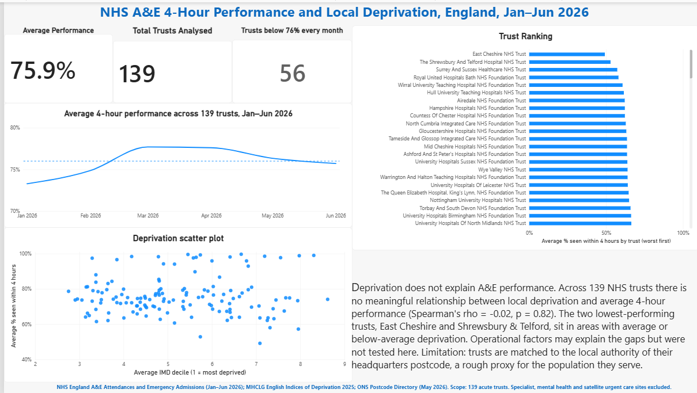

Does the deprivation of an area explain how well its NHS trust meets the 4-hour A&E standard? I combined six months of NHS England A&E data with trust locations and the 2025 Indices of Deprivation, then tested the link across 139 English acute trusts. I found no relationship (Spearman ρ = -0.02, p = 0.82). The two lowest-performing trusts, East Cheshire and Shrewsbury and Telford, are in average or less-deprived areas, and 56 trusts (40%) missed the 76% standard in every month. The project involved cleaning messy NHS spreadsheets, resolving a local authority boundary change and a mid-year trust rename, and presenting the results in an interactive Power BI dashboard.

This is an Analysis that shows the performance of flights in America for 2024. This analysis shows the flight volume across airports, the amount of flight cancelled, flights that were delayed, diverted flight, on-time arrivals, delays that were caused by airline carriers, and delays that occurred due to security challenges. This project was made using Power BI.


This project is all about the visualization of YouTube Music. This is an analysis of music that were listened to in 2024, and it also answers some questions that bothered around the songs that people listened to the most throughout the year, the top 5 most streamed songs, artist with the most streams, the average streams per month etc. This project was made using Power BI.

This is a 2025 software developer survey that was conducted on Stack Overflow. This survey was answered by over 50,000 computer programmers, as they were asked questions like work experience, level of coding, if they prefer working remotely or on-site, their level of education, how they learnt coding, if they took professional courses in order to learn. I used Python programming language in performing some data cleaning and data transformation in this project .

This is a Bank loan analysis. This addresses an individual/joint income generation on an annual basis, if they own a home and if it is being mortgaged, if the individual has access to loans, the amount they've collected over a specific period and how long they intend to repay the loan. This project addresses if the individual has access to good loans or bad loans, it also talks about the interest accrued overtime. This project answers some pertinent questions. I performed some data cleaning and data transformation in this project. This Project was completed with Python Programming Language.

This project is an analysis of Blinkit's sales performance, inventory distribution, customer satisfaction in which it is used to identify insights and opportunities for optimization using various KPI's such as ratings, average sales etc. This project answers some pertinent questions and it also provides some visualization for the answered questions. I used Python Programming Language for this project.